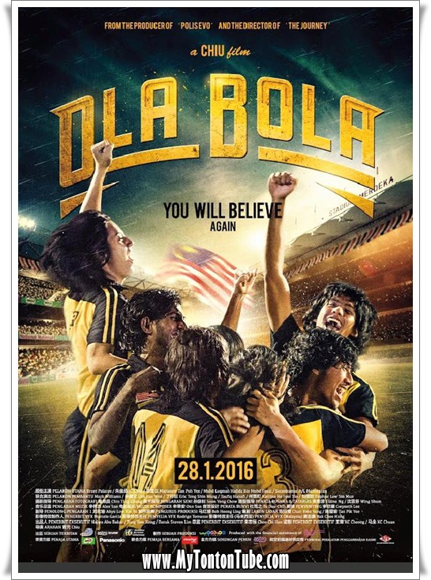
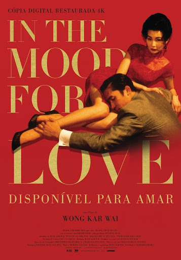
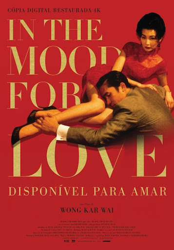

Films That Shaped My Passion for Producing
Films have the power to move hearts, spark imagination, and inspire change. Here are some of my favorite films that deeply influenced my dream to become a film producer:
- Life of Pi - A breathtaking story of survival and spirituality.
- In the Mood for Love - A masterpiece of emotion, music, and visual storytelling.
- Ola Bola - A heartwarming Malaysian story about hope, unity, and dreams.
- Crouching Tiger, Hidden Dragon - A stunning combination of action, tradition, and beauty.
- Love Conquers All - An independent Malaysian film showing the power of small, meaningful stories.
Inspiring Poster
 
